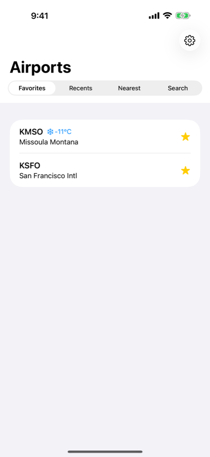
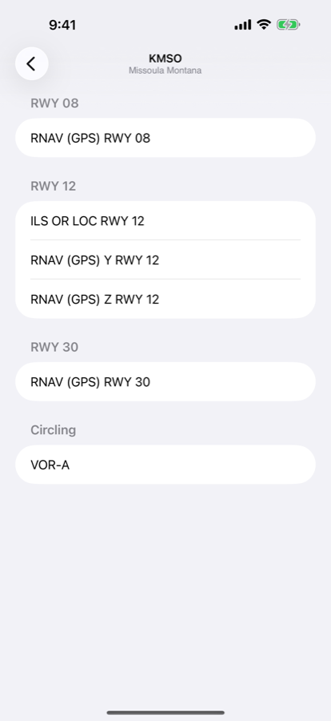
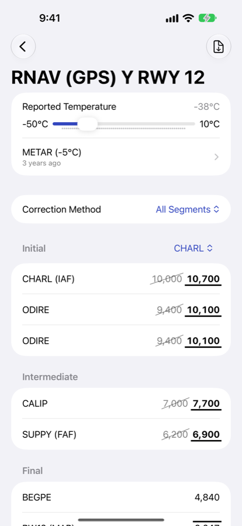

Cold temperature altitude corrections.
CTA Helper corrects the published altitudes on an instrument approach for temperature, using the current METAR. Pick an airport and an approach, and it shows the corrected altitude next to each published one.
- Published
- Corrected
How it works
A barometric altimeter assumes a standard atmosphere. In air colder than standard the altimeter reads high, so the aircraft is lower than indicated.
At a Cold Temperature Restricted Airport, that means computing a correction for each published altitude on the approach and adding it. CTA Helper does the arithmetic.
It implements the ICAO Doc 8168 linear correction formula and the FAA rules in AIP ENR 1.8, including which segments and altitudes the method applies to.



Features
-
Every fix on the approach
Initial, intermediate, final, and missed. Each fix shows its published altitude and its corrected one, grouped by segment and transition.
-
Follows the FAA rules
Altitude windows, block altitudes, and the fixes the method leaves uncorrected are all handled. DA/MDA is corrected only where the method allows it.
-
Temperature from the METAR
The current observation for the airport is fetched and used for the correction, with the raw METAR a tap away. You can also set the temperature yourself.
-
Method and rounding
Correction method and rounding convention are settings, so the results match the convention you use.
-
Current nav data
Approach and fix data ships as a versioned AIRAC cycle, verified against a published SHA-256 before it is imported.
-
Airport list
Search by identifier or city, or use favorites, recents, and nearest. The reported temperature is shown next to each airport.
Open source
-
No tracking
No accounts, no advertising identifiers, no analytics. Your location is resolved on device and never leaves it. Read the privacy policy.
-
The correction engine
The correction engine is MIT-licensed Swift, free of any UI or storage framework, and tested against the FAA's own worked examples. Browse the source.
-
Nav data
Approach and fix data is published as its own versioned repository, so you can check what the app is reading. See the nav data.
FAQ
Can I fly the altitudes this app gives me?
Treat them as a cross-check, not a source. CTA Helper is for situational awareness and planning. The official approach plate is the authority for every altitude, and ATC must be advised when you apply a correction on a segment where that's required.
Which correction method does it use?
The ICAO Doc 8168 linear formula, with the applicability rules from AIP ENR 1.8. You can choose whether corrections apply to all segments or only the ones the restricted-airport list requires, and how results are rounded.
Does it work without a data connection?
Nav data is stored on device, so approaches and corrections are available offline. Fetching a fresh METAR needs a connection; without one, set the temperature by hand.
How current is the nav data?
The app checks on every launch whether the imported AIRAC cycle has expired, and offers the current one when it has. You can download it then, or defer and keep flying the cycle you have — Settings goes on showing that it is out of date. Downloads are verified against a published SHA-256 and byte count before importing.
Is there a Mac or Apple Watch version?
Not today. CTA Helper is a universal app for iPhone and iPad.
Something's wrong. Where do I report it?
Open an issue on GitHub, or email apple@timothymorgan.info.